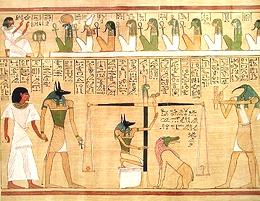
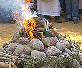
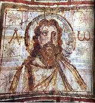

Modern Spirituality
In our time, the major religions controlling much of
our world for over 2000 years seem increasingly worn out and dangerous.
Some cultures increasingly recognize these religions as tools of
opression. Many are looking for relief from less destructive spiritual
practices of other cultures and other times. Of particularly interest
are the practices of our own cultures from pre-Christian times. This
page is devoted to exploring such possibilities.
We have a couple of articles on Neo-Paganism, but hope to have
contributed articles on other non-destructive, ecologically aware
spiritualities that have evolved significantly in the 20th and 21st
centuries.


Contact
|
|
|

A Pagan Reality - In Our Time:
This page presents religions and philosophies derived from those of
the pre-Christian past of Europe. Some are careful reconstructions
of past practices of particular people, that can become part of their
national identity. Others are derived from rather loose and imaginative
interpretations of the folk ways of the past.

Jesus & Paganism
This page explores issues surrounding Christo-Paganism. It can be
helpful for persons wishing to bring Jesus into the Pagan fold, and also
helpful for Christian interested in the relationship of Christianity
to Paganism.
|
index 160702
©Andrew Grygus
- agryg@clovegarden.com